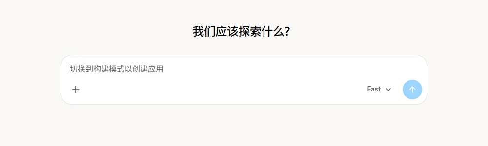
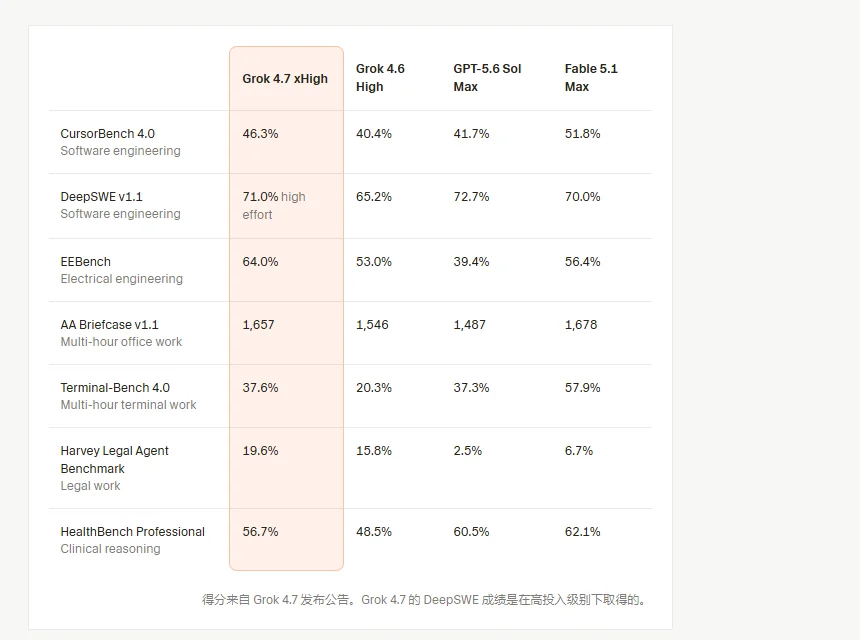

GrokSpaceXAI（原 xAI，SpaceX 旗下）
马斯克的 AI 产品线：Grok 聊天、Grok Bot 工作 Agent、Grok Build 编程，和 Cursor、X Premium 打包成一个 X Subscription；背后是并入 SpaceX 的 SpaceXAI 和 Colossus 超算。
一页结论
- 公司形态剧变：2026 年 2 月 SpaceX 以全股票收购 xAI，7 月改名 SpaceXAI，10 月 X 账号改为 SpaceX Super Intelligence（@SpaceXSI）；8 月又完成对 Cursor 的收购S5
- 订阅捆绑是核心打法：10 月 12 日推出 X Subscription，把 Grok、Grok Bot、Cursor 和 X Premium 合成五档，一个用量池在 Grok 应用、X 里的 Grok 和 Cursor 之间共享S1
- Grok Bot：办公 Agent：每个 Bot 有持久的云电脑（浏览器、文件系统、终端），可多 Bot 协作、看一遍演示学会流程、定时运行；含在每个付费个人套餐中S2
- 模型主打编程与知识工作：9 月发布 Grok 4.7，官方称在 Grok Bot 运行框架上专门调优，更擅长生成文档和演示，价格为同类模型的一半S3
- 争议不断：深度伪造图像、Colossus 2 未获空气许可的诉讼、马斯克承认 Grok 部分通过蒸馏 OpenAI 模型开发S5
01公司介绍
02公司战略
SpaceXAI 用“社交平台 + 编程工具 + 订阅捆绑”的组合，把 X 的用户、Cursor 的开发者和 Grok 的模型拧成一股绳。
- 一个订阅、一个用量池：Grok 应用、X 里的 Grok 和 Cursor 共享 Grok 模型额度；同档位编程用量至少是旧 Cursor 套餐的 2 倍S1
- 收购开发者入口：以 600 亿美元收购 Cursor，把职业开发者变成 Grok 模型的用户S5
- 模型为 Agent 调优：Grok 4.7 在 Grok Bot 运行框架上调优，面向长时间编程与知识工作S3
- 算力对外出租：Colossus 同时向 Anthropic、Google 等出售算力S5
03产品定位
| 产品 | 做什么 |
|---|---|
| Grok（应用与 X 内） | 聊天、语音、图像与视频生成（Imagine）S1 |
| Grok Bot | “能留下来的 AI 队友”：有名字、有职责、上下文持续积累，在自己的云电脑上把任务做完S2 |
| Grok Build | 编程与构建应用；grok.com 提供“构建模式”S1S7 |
| Cursor | 同属 SpaceXAI 的编程智能体，套餐打通S1 |
| Grok API | 开发者调用 Grok 模型S3 |

04产品与主要功能
Grok 的办公与 Agent 能力集中在 Grok Bot，编程能力主要借助同门的 Cursor。
产品架构
交互入口
Grok App（网页、iOS、Android）X 中的 Grok 标签Grok Bot（macOS、Windows、Linux、iOS、Android）CursorGrok API
Agent 层
Grok Bot：多 Bot 并行与群聊协作从演示中学会技能定时运行的例行任务Grok Build 构建应用
能力
聊天与语音（Grok Voice）Imagine 图像与视频已连接应用 + 电脑操作
模型层
Grok 4.7 / 4.6 / 4.5Grok Build 编程模型Composer 2.5（Cursor）
运行环境
每个账号一台持久云电脑（浏览器、文件系统、终端）Colossus 数据中心
安全与管控用户间严格隔离团队版 SSO 与管理SOC 2企业统一用量池
核心功能
| Grok Bot 能力 | 说明 |
|---|---|
| 每个 Bot 有一台电脑 | 持久云电脑带浏览器、文件系统和终端，能用已连接的应用，其余用电脑操作完成；关掉笔记本也继续S2 |
| 用一句话设置 | 创建 Bot、描述职责、按提示授权，不需要搭工作流S2 |
| 多 Bot 协作 | 并行工作、互发消息、在群聊里共享上下文、转交任务S2 |
| 看演示学流程 | 带着 Bot 走一遍多步骤流程，它能保存为技能并按计划重复执行S2 |
| 上下文持续积累 | 记忆、文件、浏览器会话和偏好跨会话保留S2 |

12 项能力评估
05商业模式
Grok 不再单独售卖，统一纳入 X Subscription；企业另有团队与企业方案。
| 档位 | 用量 | 包含 |
|---|---|---|
| Free | 有限 | 每日 Grok、Cursor 入门额度、标准 XS1 |
| Plus $8 | 基础 | 更多 Grok 与 Cursor 用量，认证标志、创作者工具、更少广告S1 |
| Premium $30 | Plus 的 4 倍 | 相当于 SuperGrok + Cursor Pro + X Premium+（此前合计 $90）S1 |
| Super $100 / Ultra $200 | 15 倍 / 50 倍 | Premium 全部权益S1 |
| 团队 / 企业 | 按席位 | 团队版编程用量为旧 Cursor 团队版 3 倍；企业版一个仪表盘、一个用量池S1 |
超出用量按 API 标价充值；老订阅可保留原套餐，切换时按比例退款S1。
收入特点：2025 年收入 32 亿美元、经营亏损 64 亿美元S5。捆绑订阅把三款产品的用户合到一个账单里，用“每美元用量更多”吸引切换（官方说法S1），代价是 Grok 产品的独立定价能力被稀释（分析意见）。
06上下游与渠道
上游：算力
自建 Colossus 数据中心S5
上游：模型
自研 Grok 系列；Grok 4.5 起与 Cursor 联合训练（见 Cursor 报告）
Grok 产品
Grok App、Grok Bot、Grok Build、API
生态
Cursor 编程生态Colossus 算力客户（Anthropic、Google 等）S5
下游客户
X 用户与 Grok 订阅者开发者与企业团队
07市场表现
08用户口碑
Grok 的口碑高度两极，争议多与内容安全和公司行为有关（B 级媒体报道）。
09安全合规
10近期动态
11潜在风险分析意见
| 风险 | 表现 | 可能程度 |
|---|---|---|
| 内容安全与监管 | 深度伪造等问题可能招致多国监管与平台下架风险S5 | 高 |
| 品牌与信任 | 公司改名频繁、创始团队离职、与 OpenAI 等的公开冲突，影响企业客户信任S5 | 中 |
| 亏损与资本开支 | 2025 年经营亏损 64 亿美元，算力投入巨大S5 | 中 |
| 捆绑稀释定位 | 专业编程工具、社交会员与 AI 助手混在一个订阅里，各自定位被模糊（分析意见） | 中 |
| 环保诉讼 | Colossus 2 空气许可诉讼可能影响算力扩张S5 | 中 |
“可能程度”为基于现有公开信息的判断，不是量化预测。
12综合结论分析意见
优势
- X 平台与 Cursor 带来的双重入口
- 自建超大算力
- Grok Bot 的持久云电脑形态
劣势
- 内容安全争议多
- 官方用户数据不透明
机会
- 订阅捆绑带来的交叉转化
- 算力对外出租的第二收入曲线
威胁
- 监管与诉讼
- OpenAI 等对手的供应链反制（如停止向 Cursor 供应模型）
对 AI 产品团队的启示
- 捆绑能快速放大用户，但要守住各自的价值主张：X Subscription 把三类用户合进一个账单，交叉转化快，但每个产品都要回答“我为什么值这个钱”。
- “持久的 AI 队友”是办公 Agent 的新形态：Grok Bot 有名字、有电脑、有记忆，能看演示学流程，和 ChatGPT 的 dot、Claude 的 Dispatch 思路一致。
- 模型要为自己的 Agent 框架调优：Grok 4.7 专门在 Grok Bot 框架上训练，模型与产品一起设计才能发挥最大效果。
- 内容安全是平台型产品的底线：图像生成的滥用一旦发生，对品牌和监管的影响远大于功能上的领先。
信息缺口
以下信息未找到可靠的公开来源，本报告不做推测。
- Grok 与 Grok Bot 的官方用户数（第三方称 1.17 亿月活，未核实）
- 2026 年收入
- Grok Bot 与 Grok Build 的单独使用数据
- SpaceXAI 与 Cursor 联合训练模型的具体分工
来源
A 官方 · B 权威媒体或第三方 · C 社区（仅用于口碑与线索）。访问日期均为 2026-11-02。
- S1 · AIntroducing The X SubscriptionSpaceXAI（x.ai） · 2026-10-12
- S2 · AGrok BotCursor 文档
- S3 · AGrok 4.7SpaceXAI（x.ai） · 2026-09-21
- S4 · Ax.ai News（Grok Build 0.1、Grok Voice 3.0 等）SpaceXAI · 2026
- S5 · BxAI (company)（汇总路透社、CNBC、招股书等报道）Wikipedia
- S6 · AGrok 4.7 in CursorCursor · 2026-09
- S7 · Agrok.comSpaceXAI